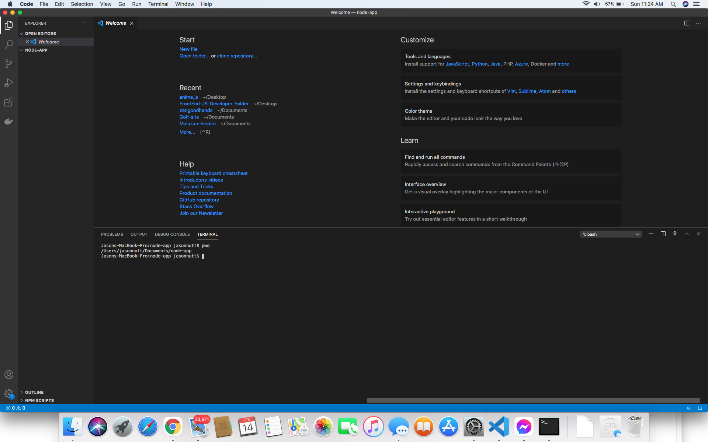
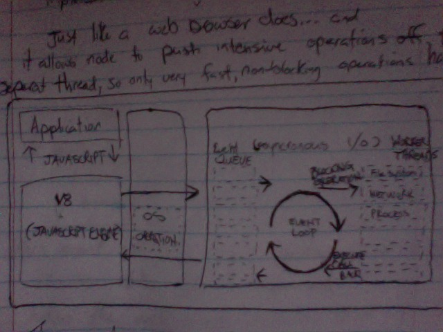

A developer's Blog
A Walk Through of the Land of Node.js
with Jason Nutt
So, how does an event work in Node.js?...And just what IS node anyways?
A re-re-iterated version of compiled notes & learning
From Treehouse, YouTube, DevEd, Node.js Docs and more...
Blog # 1 of my journey to truly understand Node.js...won't you join me?

First, I would like to start by suggesting that we take EVERYTHING else OFF of the table.
JUST have your favorite text editor (I mean VS code lol), open with an empty folder and name it something like node-app, as that is what you will be aspiring to build.
Then, we just need to open the terminal by holding CNTL + J. I am on a Mac so windows will vary slightly with the keyboard shortcut.
This means it should look something similar to this

In order to make sure that node.js is installed on your machine properly,
just type into the terminal (which you have just opened by pressing CTRL + J) node -v
...Press enter/return
This will either do one of two things.
It will tell you the version of node that you are working with OR
It will let you know that it doesn't know WT Heck Fire you are asking it.
NO WORRIES, if typing
node -v
gets you a message that says something other than it's version,
then you DO NOT have Node.js downloaded and there is a quick easy fix..
are you still here?? DOWNLOAD Node.js!!
Ok, GREAT! Now that we know for certain that node.js is installed
and is currently running in our terminal,
we can make sure that the package manager (npm) is up to date.
npm is a node package manager and is INCLUDED when you install Node.js.
The way to check your version of npm is the same as checking for the node version.
Type the following npm -v
Ok, GREAT, another breakthrough.
NOW you ARE working on a node application.
I know you have not written ANY html or css or javascript!
I thought this very thing also!
You HAVE ensured your runtime by making sure that node and npm are here in your environment.
I hope that helps someone...
Also, putting a 1px solid red border @ things helps me to work with their layout more easily with CSS because I can physically see what I am working with and the space the element is taking up...as you can clearly see here.
Later, we will utilize npm by asking it to install whatever node module that works best for the application that we decide to make.
SO, what IS Node.js?
You'll often hear people describe it as asynchronous event driven javascript runtime...
runtime implements a thing called an event loop.
JUST LIKE A WEB BROWSER!!

And it (the runtime event loop) allows node to push intensive operations off to a seperate thread, so only fast, non-blocking operations happen on the main thread.
...This is why people often call node non-blocking.
It is a design choice that makes node suitable for things like "Real Time" applications and Web Servers
...things like that.
OK?!....So how does this affect me as a Coder?
Well, normally...you won't have to think about the low level details,
you just need to know how callbacks and events work...
most cases you'll listen to events, events come in many forms in Node.js.
One example is on the process
global.
Before a node process finishes, it emits an event named exit,
we can listen to this event by using
.on
, then registering a callback function as the second argument.
process.on ('exit', function() =>
{ //Run this code block // })
whenever the
exit
event occurs, THAT is when node will run this block of code, (whatever the function does).
That is where it gets its name "callback".
Because it is NOT called the first time that node sees it,
it is ONLY called after the exit event occurs at
SOME POINT in the future.
This event is built into node, but you may make your own from scratch.
This knowledge is not covered here.
We can import an
{ EventEmitter }
from the events module that is also built into node
(do you see a theme here?), there are a lot of useful modules built into node.
I will make a whole other blog that covers modules more. And then another because there are many!
This event driven style of programming is extremely useful when you have something that is CPU intensive.
And with that,
we will move on to the next phase of my beginner's guide to node.js with an explanation of a
BUILT IN file system that comes with node.js called fs.
I sincerely hope that this will help someone to get their head around node.js & npm.
Next we will start by going over a bit of fs but re-route into an express tutorial
Which means I will be going over how to install express after we have our directory open & node/npm installed
Have a closer more detailed look at Events in Node.js
If it didn't, tune in to the next one and I will try harder to make it more iterable and useful. Happy coding and learning Everyone!!!
This will take you to the next blog if you want to follow...